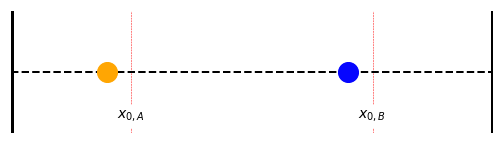
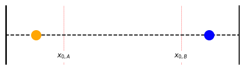

4 Coupled Oscillators
The next stage in our exploration of oscillators is to examine the principles behind coupling one oscillator to another. This is known as a ‘coupled oscillator’. Two typical examples of a coupled oscillator are shown in Figure XX below; either two pendulums which are linked by a spring, or a pair of oscillating masses on springs which are linked by a further spring. In either case, the mathematics is similar.
For the purposes of discussion here, we will consider the example of two linked masses. This ostensibly keeps the mathematics simpler, however through a simple substitution it is readily adapted for the case of the linked pendulums.
4.1 The uncoupled example
Consider two masses oscillating on a smooth plane as shown in Figure 4.1.
This is a situation we have seen before, and we can set up the equations of motion in a straightforward manner by considering the forces on the masses ()
For A:
\[ F_A = -k_A x_A = m_A \frac{\mathrm{d}^2 x_A}{\mathrm{d}t^2} \tag{4.1}\]
and for B: \[ F_B = -k_B x_B = m_B \frac{\mathrm{d}^2 x_B}{\mathrm{d}t^2} \tag{4.2}\]
4.2 Coupling the oscillators
So far, this is unremarkable. However, when we connect the two masses with a third spring, we can start to consider the coupled interactions. We illustrate this in Figure 4.3.
In order to determine the equations of motion here, we need to consider the forces on each oscillating mass. Put simply; there are two forces acting on each mass to control their oscillations; the force from its original spring (\(F_A\) or \(F_B\)), and the new force from the coupling spring, \(F_{AB}\).
From Figure 4.3 we can see that the overall extension of the coupling spring, \(\delta\) will be given by:
\[ \delta = x_B - x_A \tag{4.3}\]
The appearance of the negative sign in Equation 4.3 initially appears counter-intuitive, however consider the signs on each of the extensions in reference to the arbitrary ‘positive’ direction we defined earlier:
- If \(x_B = x_A\), there will be no extension; so no force will be applied from the coupling spring
- In the diagram above, \(x_A\) is negative; this gives a double-negative in Equation 4.3, with a positive value of \(\delta\) (a stretched spring)
- However, if \(x_A\) is sufficiently positive, it will result in a negative value of \(\delta\), indicating a compressed spring.
You may find it helpful to draw sketches of each of these situations to reason it through!
Ok, let’s first consider the total force acting on mass \(A\):
\[ \begin{array}{rcl} F_{\mathrm{Total, }A} &=& F_A + F_{AB} \\ &=& -k_A x_A + k_{AB}(\delta) \\ &=& -k_A x_A + k_{AB}(x_B - x_A) \\ &=& m_A \frac{\mathrm{d}^2 x_A}{\mathrm{d}t^2} \end{array} \tag{4.4}\]
We can reason the direction of the force \(F_AB\) from a sketch; if the coupling spring is stretched (positive \(\delta\)), the force will be in the positive direction. If the coupling spring is compressed (negative \(\delta\)) the force will be in the negative direction.
This situation changes slightly for mass \(B\):
\[ \begin{array}{rcl} F_{\mathrm{Total, }B} &=& F_B - F_{AB} \\ &=& -k_B x_B - k_{AB}(\delta) \\ &=& -k_B x_B - k_{AB}(x_B - x_A) \\ &=& m_B \frac{\mathrm{d}^2 x_B}{\mathrm{d}t^2} \end{array} \tag{4.5}\]
In this case, a stretched coupling spring (positive \(\delta\)) will cause a force in the negative direction and vice versa.
We have therefore generated two equations of motion to describe the coupled oscillator:
\[ -k_A x_A + k_{AB}(x_B - x_A) = m_A \frac{\mathrm{d}^2 x_A}{\mathrm{d}t^2} \tag{4.6}\]
and
\[ -k_B x_B - k_{AB}(x_B - x_A) = m_B \frac{\mathrm{d}^2 x_B}{\mathrm{d}t^2} \tag{4.7}\]
4.3 Simplifying the expressions
We know from instinct that the motion of a component in a coupled oscillator should be harmonic in nature, however it is not immediately clear from the equations that this is the case; therefore some simplification is in order.
Firstly, let’s add together Equation 4.6 and Equation 4.7:
\[ \begin{array}{rcl} m_A \frac{\mathrm{d}^2 x_A}{\mathrm{d}t^2} + m_B \frac{\mathrm{d}^2 x_B}{\mathrm{d}t^2} &=& -k_A x_A -k_B x_B + k_{AB}(x_B - x_A) \\ & & \quad - k_{AB}(x_B - x_A) \\ &=& -k_A x_A -k_B x_B \end{array} \tag{4.8}\]
If the spring constants \(k_A\) and \(k_B\) are equal, and the masses \(m_A\) and \(m_B\) are equal, we can simplify further:
\[ m\frac{\mathrm{d}^2 (x_A +x_B)}{\mathrm{d}t^2} = -k (x_A + x_B) \tag{4.9}\]
We can gain a second expression to describe our coupled system by subtracting Equation 4.7 from Equation 4.6:
\[ \begin{array}{rcl} m_A \frac{\mathrm{d}^2 x_A}{\mathrm{d}t^2} - m_B \frac{\mathrm{d}^2 x_B}{\mathrm{d}t^2} &=& -k_A x_A + k_B x_B + k_{AB}(x_B - x_A) \\ & & \quad + k_{AB}(x_B - x_A) \\ &=& -k_A x_A + k_B x_B + 2 k_{AB}(x_B - x_A)\\ \end{array} \tag{4.10}\]
Again, if the spring constants \(k_A\) and \(k_B\) are equal, and the masses \(m_A\) and \(m_B\) are equal, we can again simplify further:
\[ \begin{array}{rcl} m\frac{\mathrm{d}^2 (x_A -x_B)}{\mathrm{d}t^2} &=& -k(x_A - x_B) - 2k_{AB}(x_A - x_B) \\ &=& -(k + 2k_{AB})(x_A - x_B) \end{array} \tag{4.11}\]
This does not immediately appear to simplify the situation, however if we now define two variables, \(y_1\) and \(y_2\) (we use numerical subscripts now to eliminate confusion with the alphabetical labels of the oscillating masses):
\[ \begin{array}{rcl} y_1 &=& x_A + x_B \\ y_2 &=& x_A - x_B \end{array} \tag{4.12}\]
we can now do a substitution into Equation 4.9 and Equation 4.11:
Equation 4.9 becomes:
\[ \begin{array}{rcl} m\frac{\mathrm{d}^2 (x_A +x_B)}{\mathrm{d}t^2} &=& -k (x_A + x_B) \\ \\ m\frac{\mathrm{d}^2 y_1}{\mathrm{d}t^2} &=& -k y_1 \end{array} \tag{4.13}\]
…while Equation 4.11 becomes
\[ \begin{array}{rcl} m\frac{\mathrm{d}^2 (x_A -x_B)}{\mathrm{d}t^2} &=& -(k + 2k_{AB})(x_A - x_B) \\ \\ m\frac{\mathrm{d}^2 y_2}{\mathrm{d}t^2} &=& -(k + 2k_{AB})y_2 \end{array} \tag{4.14}\]
Now we have two equations, Equation 4.13 and Equation 4.14, each of which is far simpler than the solutions in \(x\), and each satisfies a harmonic oscillator condition in \(y_n\). However, the \(y_n\) terms do not influence each other and are, effectively independent.
Key observations
- \(y_1\) represents one oscillator of mass \(m\) and a spring constant \(k\);
- \(y_2\) represents a second oscillator of mass \(m\) and a spring constant \((k+2k_{AB})\)
4.4 Getting back to displacement
We can therefore use the same approach as we used in Section 1.2 to give a solution for each term:
\[ \begin{cases} \begin{array}{l} y_1 (t) = B_1 \cos (\omega_1 t + \phi_1) \\ y_2 (t) = B_2 \cos (\omega_2 t + \phi_2) \end{array} \end{cases} \tag{4.15}\]
Note that we are deliberately using different terms from previous examples (\(B_n, \phi_n\)), to highlight that these are arbitrary constants. However, we can now use the same techniques as in Equation 1.2 and Equation 1.9 to obtain expressions for the frequencies \(\omega_1\) and \(\omega_2\) (Equation 4.16):
\[ \begin{array}{rcl} \omega_1 &=& \sqrt{\dfrac{k}{m}} \\ \\ \omega_2 &=& \sqrt{\dfrac{(k+2k_{AB})}{m}}\\ \end{array} \tag{4.16}\]
We can now return to equations Equation 4.12 to return our expressions in \(y\) to the displacement \(x\) of each oscillating mass. Firstly, invert the equations shown in Equation 4.12 to obtain the results shown in Equation 4.17:
\[ \begin{cases} \begin{array}{rcl} x_A &=& y_1 - x_B \\ &=& y_2 + x_B\\ &=& \frac{1}{2} y_1 + \frac{1}{2}y_2 \\ \\ x_B &=& y_1 - x_A \\ &=& y_2 + x_A\\ &=& \frac{1}{2} y_1 - \frac{1}{2}y_2 \end{array} \end{cases} \tag{4.17}\]
4.5 Solving the coupled oscillator
We can now use the general results from Equation 4.15 to give the coupled solutions Equation 4.18:
\[ \begin{cases} \begin{array}{rcl} x_1 &= & \frac{1}{2} B_1 \cos(\omega_1 t + \phi_1) + \frac{1}{2}B_2 \cos (\omega_2 t + \phi_2)\\ x_2 &=& \frac{1}{2} B_1 \cos(\omega_1 t + \phi_1) - \frac{1}{2}B_2 \cos (\omega_2 t + \phi_2)\\ \end{array} \end{cases} \tag{4.18}\]
Recalling our angle formulae, we know that we can express the term \(B \cos (\omega t + \phi)\) as \(C \cos (\omega t) + D \sin(\omega t)\), where the new constants \(C\) and \(D\) are a combination of the original constant \(B\) and either \(\cos \phi\) or \(\sin \phi\) (ensure you can identify where this comes from!). This can be used to give a full general solution as:
\[ \begin{cases} \begin{array}{l} x_1 = C_1 \cos(\omega_1 t) + D_1 \sin(\omega_1 t) + C_2 \cos(\omega_2 t) + D_2 \sin(\omega_2 t) \\ x_2 = C_1 \cos(\omega_1 t) + D_1 \sin(\omega_1 t) - C_2 \cos(\omega_2 t) - D_2 \sin(\omega_2 t) \end{array} \end{cases} \tag{4.19}\]
This full solution is more helpful to us if we wish to consider initial conditions of the system (e.g. \(x_1 (0)\), \(v_1 (0)\) etc.).
4.6 Normal coordinates
But where are the practicalities of all this? So far, we have done a lot of mathematical manipulation to arrive at two coupled equations (Equation 4.19) which, while they ostensibly describe the position of two coupled oscillating masses, still remain frustratingly abstract! It is helpful to return to the ‘simple’ expressions in Equation 4.13 and Equation 4.14:
\[ \begin{cases} m\frac{\mathrm{d}^2 y_1}{\mathrm{d} t^2} = -k y_1 \\ m\frac{\mathrm{d}^2 y_2}{\mathrm{d} t^2} = -(k+ 2k_{AB}) y_2 \\ \end{cases} \tag{4.20}\]
These underlying ‘natural variables’, \(y_1\) and \(y_2\), are much simpler to consider and work with, and we therefore call these variables “normal coordinates”, as it is simpler to work with these directly, and then return to displacement/velocity/acceleration coordinates of the system. It also helps us to visualise what is happening within the system. To do this, we will take the two extreme situations - when \(x_A = x_B\), and when \(x_A = -x_B\).
It is helpful to have the following on hand:
\[ \begin{array}{rcl} y_1 &=& x_A + x_B \\ y_2 &=& x_A - x_B \end{array} \]
4.6.1 When \(x_A = x_B\)
In this situation, \(y_1 = 2x\), and \(y_2 = 0\). From equation Equation 4.18, the \(y_2\) term reduces to zero, and we have the displacements for each oscillator as Equation 4.21:
\[ \begin{cases} \begin{array}{rcl} x_1 &= & \frac{1}{2} B_1 \cos(\omega_1 t + \phi_1) \\ x_2 &=& \frac{1}{2} B_1 \cos(\omega_1 t + \phi_1) \\ \end{array} \end{cases} \tag{4.21}\]
We can see from the mathematics that the displacement of each mass from its equilibrium point is identical, however it is often helpful to visualise this motion. In this case, the mid-point between the masses may be considered to be moving in concert with the two masses (Figure 4.4):

Fundamentally, from Equation 4.3 we know that if \(x_A = x_B\), then the extension of the coupling spring is zero. Therefore each mass may be considered to be oscillating exactly in phase and only under the influence of its spring, \(k\). We would expect therefore the oscillation frequency to match that of the uncoupled oscillators introduced in Section 4.1.
4.6.2 When \(x_A = - x_B\)
This is the exact opposite situation to that discussed above. In this situation, \(y_1 = 0\), and \(y_2 = 2x\). As it is the \(y_0\) term which is now reduced to zero in Equation 4.18, this expression reduces to Equation 4.22:
\[ \begin{cases} \begin{array}{rcl} x_1 &= & \frac{1}{2} B_2 \cos(\omega_2 t + \phi_2) \\ x_2 &=& - \frac{1}{2} B_2 \cos(\omega_2 t + \phi_2) \\ \end{array} \end{cases} \tag{4.22}\]
Now we have a symmetry; at any stage of motion, mass \(A\) will be displaced by the same amount as mass \(B\) in the opposite direction. The consequence of this now is that the mid-point between the masses now does not move as the masses oscillate, and can be considered a node (Figure 4.5).

4.6.3 Application of normal coordinates
These two situations describe the two vibrational “modes” of this coupled system, termed normal modes; any oscillation of this system is completely described by the combination of contributions from each mode (\(y_1\) describing the uncoupled contribution, \(y_2\) describing the fully coupled contribution)
Characteristics of normal coordinates
- Normal coordinates arise from equations of motion expressed in the form of linear differential equations, each with only a single dependent variable (\(y_1\) and \(y_2\) in our examples).
- A normal mode of vibration is a vibration of the system which involves only one dependent variable (either \(y_1\) or \(y_2\) in our examples)
- Each normal mode of vibration has its own characteristic frequency, its normal frequency
- The overall vibration of a system may be described as a series of contributions from each normal mode; each normal mode is independent of other normal modes, and energy is never exchanged between normal modes.
4.7 Particular solutions
We covered two particular solutions above, concerning the extreme cases of the normal coordinates, however there are other interesting cases. One particular case occurs when a vibration is initiated with one mass in its equilibrium position and only the other mass is disturbed. The coupling spring of course transfers energy from the moving mass to the stationary one, however due to the similarity in mass, we start to observe resonance effects (Figure 4.6).
A note on energy transfer
When considering the individual masses in a coupled system, we of course have transfer of energy occurring between the two masses. However it is important to recognise that while energy is transferred between coupled oscillators, energy is not transferred between the normal vibrational modes describing that oscillation of the system.
This resonant energy transfer between each oscillator is particularly apparent when the coupling spring has a considerably lower spring constant than the springs connecting the oscillators to the rigid walls (the local springs); in Figure 4.6 the coupling spring has a constant which is one-tenth that of the local springs.
We can solve this example algebraically. Let’s re-exmine to the general solution for the coupled oscillator (Equation 4.23)
\[ \begin{cases} \begin{array}{rcl} x_1 &= & \frac{1}{2} B_1 \cos(\omega_1 t + \phi_1) + \frac{1}{2}B_2 \cos (\omega_2 t + \phi_2)\\ x_2 &=& \frac{1}{2} B_1 \cos(\omega_1 t + \phi_1) - \frac{1}{2}B_2 \cos (\omega_2 t + \phi_2)\\ \end{array} \end{cases} \tag{4.23}\]
We said that at the start, our initial conditions would be that one oscillator is displaced to amplitude \(A\) while the other is held at its equilibrium. Therefore our starting conditions become:
\[ \begin{array}{rclrcl} x_1 (0) &=& A & \dot{x}_1 (0) &=& 0 \\ x_2 (0) &=& 0 & \dot{x}_2 (0) &=& 0 \end{array} \] The result of this is that our phase constant \(\phi\) evaluates to zero, while the amplitude component \(B_1 = B_2 = A\). We can apply these to Equation 4.23 to obtain a particular solution:
\[ \begin{cases} \begin{array}{rcl} x_1 &= & \frac{1}{2} A \cos(\omega_1 t) + \frac{1}{2}A \cos (\omega_2 t)\\ x_2 &=& \frac{1}{2} A \cos(\omega_1 t) - \frac{1}{2}A \cos (\omega_2 t )\\ \end{array} \end{cases} \tag{4.24}\]
This can then be rewritten using the appropriate trigonometric identity as:
\[ \begin{cases} \begin{array}{rcl} x_1 &= & A \cos \left(\frac{\omega_2 -\omega_1}{2} t \right) \cos \left(\frac{\omega_2 +\omega_1}{2} t \right)\\ x_2 &=& A \sin \left(\frac{\omega_2 -\omega_1}{2} t \right) \sin \left(\frac{\omega_2 +\omega_1}{2} t \right)\\ \end{array} \end{cases} \tag{4.25}\]
We said that this resonance transfer was particularly great when there is an appreciable difference between the spring constants of the coupling spring and the local springs; let’s therefore consider what is going on.
When the spring constant of the coupling spring \(k_AB\) is much greater than \(k\), this will affect the frequencies \(\omega_1\) and \(\omega_2\). From Equation 4.16, when \(k_AB << k\), then the values of \(\omega_1\) and \(\omega_2\) will be similar in magnitude, with \(\omega_2\) only slightly larger. This means that the value of \(\omega_2 - \omega_1\) will be very small, while \(\omega_2 + \omega_1\) will be considerably larger.
We therefore have two cosine terms governing \(x_1\):
- \(\cos \left( \frac{\omega_2 - \omega_1}{2} t \right)\) will oscillate much slower than \(\cos \left( \frac{\omega_2 + \omega_1}{2} t \right)\)
- We view this as an oscillator of frequency \(\left( \frac{\omega_2 + \omega_1}{2} \right)\), whose amplitude varies slowly with frequency \(\left( \frac{\omega_2 - \omega_1}{2} \right)\)
A very similar situation exists for for \(x_2\), however the terms are governed by sine functions - which are \(\pi/2\) out of phase with the oscillations of the first.

A note about phases of beats
The second amplitude term described above can be called the envelope of the primary oscillation - in that it contains the amplitude of the primary oscillation within itself.
Although the oscillations of the second coupled oscillator are \(\pi/2\) out of phase with the oscillations of the first, practically we observe that one is a maximum while the other is a minimum; the nature of an envelope is to contain a primary function, and its amplitude maxima of the primary function occur twice per envelope cycle giving the appearance of amplitudes being perfectly out of phase.
4.8 The general solution: a matrix approach
We have shown above how we can obtain a solution for a system of two coupled oscillators, together with methods for finding a general solution. However, what happens when we have three coupled oscillators? Or four? Or - given that in materials we are dealing with solid lattices of bonded molecules - an almost uncountable number of coupled oscillators? The approaches detailed above become extremely difficult with each additional oscillator. We therefore need a method which is scalable.
In Section 4.2 we set up the equations of motion for the coupled oscillator (Equation 4.6 and Equation 4.6); these are reproduced below in Equation 4.27:
\[ \begin{cases} m_A \frac{\mathrm{d}^2 x_A}{\mathrm{d}t^2} = -k_A x_A + k_{AB}(x_B - x_A)\\ m_B \frac{\mathrm{d}^2 x_B}{\mathrm{d}t^2} = -k_B x_B - k_{AB}(x_B - x_A) \end{cases} \tag{4.26}\]
Let’s rewrite these equations to group our \(x_A\) and \(x_B\) terms rather than the \(k\) terms:
\[ \begin{cases} m_A \frac{\mathrm{d}^2 x_A}{\mathrm{d}t^2} = -(k_A + k_{AB}) x_A + k_{AB}x_B \\ m_B \frac{\mathrm{d}^2 x_B}{\mathrm{d}t^2} = -(k_B + k_{AB}) x_B + k_{AB}x_A \end{cases} \tag{4.27}\]
From your understanding of differential equations, you should recognise these as linear differential equations; therefore you should know that we can apply the principles of linear algebra to solve the equations. We can therefore use matrices and eigenstates to determine our solutions.
We can add together the differential equations in Equation 4.27 and then write the result in matrix form as follows (Equation 4.28)
\[ \left( \begin{array}{cc} m_A & 0 \\ 0 & m_B \end{array} \right) \left( \begin{array}{c} \frac{\mathrm{d}^2 x_A}{\mathrm{d}t^2} \\ \frac{\mathrm{d}^2 x_B}{\mathrm{d}t^2} \end{array} \right) = - \left( \begin{array}{cc} (k_A + k_{AB}) & -k_{AB} \\ -k_{AB} & (k_B + k_{AB}) \end{array} \right) \left( \begin{array}{c} x_A \\ x_B \end{array} \right) \tag{4.28}\]
For simplicity, we will now define a ‘spring matrix’, \(K\), defining the springs constant, and a ‘mass matrix’, \(M\) (Equation 4.29)
\[ K = \left( \begin{array}{cc} (k_A + k_{AB}) & -k_{AB} \\ -k_{AB} & (k_B + k_{AB}) \end{array} \right) \quad ; \quad M = \left( \begin{array}{cc} m_A & 0 \\ 0 & m_B \end{array} \right) \tag{4.29}\]
This allows us to tidily rewrite Equation 4.28 as Equation 4.30:
\[ M \frac{\mathrm{d}^2 \bar{x}}{\mathrm{d}t^2} = -K \bar{x} \tag{4.30}\]
…where:
\[ \bar{x} = \left( \begin{array}{c} x_A \\ x_B \end{array} \right) \quad \mathsf{ and } \quad \frac{\mathrm{d}\bar{x}}{\mathrm{d}t} = \left(\begin{array}{c} \frac{\mathrm{d} x_A}{\mathrm{d}t} \\ \frac{\mathrm{d} x_B}{\mathrm{d}t} \end{array} \right) \]
You will recall from your mathematics lectures that you can solve such matrix equations by multiplying both sides of the equation by the inverse of a matrix; in this case we will multiply both sides of Equation 4.30 by the inverse \(M^{-1}\):
\[ \begin{array}{rcl} M^{-1} M \dfrac{\mathrm{d}^2 \bar{x}}{\mathrm{d}t^2} &=& -M^{-1} K \bar{x}\\ \dfrac{\mathrm{d}^2 \bar{x}}{\mathrm{d}t^2} & =& -M^{-1} K \bar{x} \end{array} \tag{4.31}\]
…where \(M^{-1}\) is:
\[ M^{-1} = \left( \begin{array}{cc} \frac{1}{m_A} & 0 \\ 0 & \frac{1}{m_B} \end{array} \right) \]
If we express \(M^{-1}K\) as \(D\), the dynamics equation, we can write this matrix equation as:
\[ \frac{\mathrm{d}^2 \bar{x}}{\mathrm{d}t^2} = -D \bar{x} \tag{4.32}\]
We can immediately see the connection between the matrix equation shown in Equation 4.31 and the equation of motion for a harmonic oscillator. Let’s now develop this.
4.8.1 A trial solution
Let’s now assume a simple case, with a single oscillation frequency. We will use a trial solution for all vibrational modes, in the form \(A \cos (\omega t + \phi)\). Let’s define each solution of \(x_n\) in this manner:
\[ \begin{cases} x_{A, \mathrm{trial}} = A_1 \cos(\omega t + \phi) \\ x_{B, \mathrm{trial}} = A_2 \cos(\omega t + \phi) \end{cases} \tag{4.33}\]
We have been working with matrix forms; so let’s represent this in a matrix form:
\[ \bar{x}_{\mathrm{trial}} = \left( \begin{array}{cc} A_1 \cos(\omega t + \phi) \\ A_2 \cos(\omega t + \phi) \end{array} \right) = \bar{A} \cos(\omega t + \phi) \quad \mathrm{where} \quad \bar{A} = \left( \begin{array}{c} A_1\\ A_2 \end{array} \right) \tag{4.34}\]
This matrix form is now using \(\bar{A}\); the mode amplitude vector. We can now find the second derivative of this to be:
\[ \frac{\mathrm{d}^2\bar{x}_{\mathrm{trial}}}{\mathrm{d}t^2} = -\omega^2 \bar{A}\cos(\omega t + \phi) \tag{4.35}\]
…which, when we know from Equation 4.32 that the second derivative should give us \(-D \bar{A} \cos(\omega t + \phi)\), we obtain the result:
\[ \begin{array}{rcl} \omega^2 \bar{A}\cos(\omega t + \phi) &=& -D \bar{A} \cos(\omega t + \phi) \\ D \bar{A} &=& \omega^2 \bar{A} \end{array} \tag{4.36}\]
Equation 4.36 is the main result of this process; that being that the amplitude vector of a vibrational mode is an eigenvector of the dynamics matrix \(D\) with the eigenvalue being the square of the frequency of that mode.
4.8.2 The general case
We have said Equation 4.36 as an eigenvalue equation; this is one of the most important tools in physics, and it is essential to understand how they work. In this case, we will apply this to determine the frequencies for a coupled oscillator and check with our results above.
We already seen the end result, that \(D \bar{A} = \omega^2 \bar{A}\), having constructed this assuming a single oscillation frequency. But how does this scale, particularly as we said earlier that we expect two frequencies, one from each vibrational mode?
A refresher on eigenvalue equations
For an eigenvalue equation, an \(n\times n\) matrix \(A\) will have \(n\) eigenvalues (\(\lambda_i\)) and \(n\) eigenvectors \(\bar{x}_i\) such that:
\[ A \bar{x}_i = \lambda_i \bar{x}_i \] To find our eigenvalues, we need to rearrange and solve for \(\lambda_i\):
\[ \begin{array}{rcl} A \bar{x}_i - \lambda_i \bar{x}_i &=& 0 \\ A \bar{x}_i - \lambda_i \mathbf{I} \bar{x}_i &=& 0 \\ (A - \lambda_i \mathbf{I}) \bar{x}_i &=& 0 \end{array} \] Remember that we need to multiply \(\lambda_i\) by the identity matrix \(\mathbf{I}\) because we cannot perform addition/subtraction on matrices of different dimensions.
We can now solve the eigenvalue equation; either \(\bar{x}_i = 0\) (a null result), or the determinant of the matrix \(|A - \lambda_i \mathbf{I}| = 0\). Evaluating this determinant will give the characteristic polynomial which, when solved for \(\lambda_i\), will give the eigenvalues for the equation.
We start with our eigenvalue equation, and we can rearrange this to obtain an expression which will allow us to evaluate the eigenvalue (Equation 4.37).
\[ \begin{array}{rcl} D \bar{A} &=& \omega^2 \bar{A}\\ D \bar{A} - \omega^2 \bar{A} &=& 0 \\ D \bar{A} - \omega^2 \mathbf{I} \bar{A} &=& 0 \\ (D - \omega^2 \mathbf{I}) \bar{A} &=& 0 \\ \end{array} \tag{4.37}\]
From this statement, either \(\bar{A}\) is equal to zero, or the determinant of the matrix \((D - \omega^2 \mathbf{I})\) is equal to zero. Clearly we use this second result to determine the value of the eigenvalue, \(\omega^2\).
Remembering from Section 4.8 we defined \(D\) as the dynamics matrix derived from the inverse of the ‘mass matrix’ and the ‘spring matrix’ such that:
\[ \begin{array}{rcl} D = M^{-1}K &= & \left( \begin{array}{cc} \frac{1}{m_A} & 0 \\ 0 & \frac{1}{m_B} \end{array} \right) \left( \begin{array}{cc} (k_A + k_{AB}) & -k_{AB} \\ -k_{AB} & (k_B + k_{AB}) \end{array} \right)\\ &=& \left( \begin{array}{cc} \frac{k_A + k_{AB}}{m_A} & -\frac{k_{AB}}{m_A} \\ -\frac{k_{AB}}{m_B} & \frac{k_A + k_{AB}}{m_B} \end{array} \right) \end{array} \tag{4.38}\]
Now, we set up the matrix form of our eigenvalue equation from Equation 4.37; remembering that we are looking for the eigenvalues which result in a determinant of zero. Let’s work it through!
\[ \begin{array}{rcl} (D - \omega^2 \mathbf{I}) \bar{A} &=& 0 \\ \mathrm{det}\left[ \left(\begin{array}{cc} \frac{k_A + k_{AB}}{m_A} & -\frac{k_{AB}}{m_A} \\ -\frac{k_{AB}}{m_B} & \frac{k_A + k_{AB}}{m_B} \end{array}\right) - \omega^2 \left( \begin{array}{cc} 1&0\\ 0&1\\ \end{array}\right) \right] &=& 0 \\ \mathrm{det} \left[ \begin{array}{cc} \left(\frac{ k_A + k_{AB}}{m_A} \right)-\omega^2 & -\frac{k_{AB}}{m_A} \\ -\frac{k_{AB}}{m_B} & \left(\frac{k_A + k_{AB}}{m_B}\right)-\omega^2 \end{array} \right] &=& 0 \end{array} \tag{4.39}\]
We will simplify the arrangement somewhat by considering the coupled oscillator we have been examining above; where the local springs \(k_A\) and \(k_B\) have the same spring constant, \(k\), and the oscillators \(A\) and \(B\) have the same mass, \(m\). Our determinant then becomes:
\[ \begin{array}{rcl} \mathrm{det} \left[ \begin{array}{cc} \left(\frac{ k + k_{AB}}{m} \right)-\omega^2 & -\frac{k_{AB}}{m} \\ -\frac{k_{AB}}{m} & \left(\frac{k + k_{AB}}{m}\right)-\omega^2 \end{array} \right] &=& 0 \\ \left[\left(\frac{ k + k_{AB}}{m} \right) - \omega^2 \right]^2 - \frac{k_{AB}^2}{m^2} &=& 0 \end{array} \tag{4.40}\]
This relation is now a quadratic in \(\omega^2\); as such, it will have two solutions - each corresponding to a different value of \(\omega\) - this is what we are expecting - to find \(\omega_1\) and \(\omega_2\) above. So we solve for \(\omega^2\):
\[ \begin{array}{rcl} \left[\left(\frac{ k + k_{AB}}{m} \right) - \omega^2 \right]^2 - \frac{k_{AB}^2}{m^2} &=& 0 \\ \left(\frac{ k + k_{AB}}{m} \right) - \omega^2 &=& \pm \frac{k_{AB}}{m} \\ k + k_{AB} - m\omega^2 &=& \pm k_{AB} \\ m\omega^2 &=& \mp k_{AB} + (k+k_{AB}) \\ \\ \omega^2 = \dfrac{k}{m} &\mathsf{or}& \omega^2 = \dfrac{2k_{AB} + k}{m} \end{array} \tag{4.41}\]
As we can see in Equation 4.41 we gain a result for \(\omega^2\) which gives us the two solutions for \(\omega_1\) and \(\omega_2\) which we uncovered in Section 4.3 and Section 4.4.
Caution
Remember the frequencies that we have found here correspond to the frequencies of the normal modes of vibration of the system (Section 4.6.3). They are used to describe the motion of individual oscillating masses, but both frequencies apply to each oscillating mass - not one frequency for each mass!
4.9 Why use matrices?
We have shown a few routes to look at coupled oscillators, each of which we have demonstrated to lead to the same outcome. The obvious question is why use so many approaches?
When we looked at the separate differential equations, it was a problem which is possible to solve here for two coupled oscillators, however it is not a method which is particularly scalable, for either different masses, different spring constants, or even a larger number of coupling oscillators.
The matrix approach however is scalable - it is simple in its form allowing us to see the nature of the oscillation and that it is - at its heart - still harmonic, however this simple form will scale readily for larger systems. We could look at a system of five linearly coupled oscillators, and we would expect a \(5\times 5\) spring (and hence dynamics) matrix, the determinant of which would be a fifth order polynomial with five solutions for the oscillation frequency, each corresponding to the frequency of a normal mode of vibration for the system.
Solving a determinant for a \(3\times 3\) matrix by hand is doable, for a \(4\times 4\) matrix is troublesome, and a \(5 \times 5\) matrix is downright inconvenient. However, computers are excellent at resolving determinants of matrices - making solving such problems possible - provided we know what instructions to give the computer!
Applications of matrix methods
Matrices are universal in physics, and it is hard to understate the importance of solving eigenvalue equations. Linear algebra is central to quantum physics, and greatly simplifies the process of solving complex interlinked systems. The methods shown above are simply one application of the techniques.